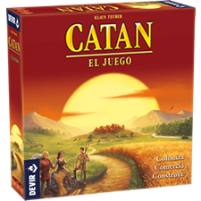
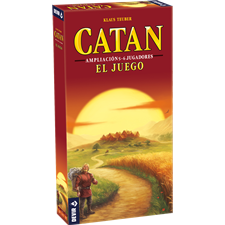
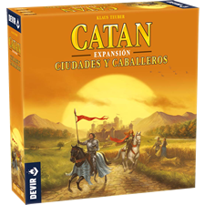
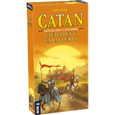

Seleccione un Juego
Catan - Juego Base

De 3 a 4 Jugadores.

De 5 a 6 Jugadores.
Catan - Ciudades y Caballeros

De 3 a 4 Jugadores.

De 5 a 6 Jugadores.
Generador de Mapas de Catan
Tablero para 3 y 4 Jugadores.